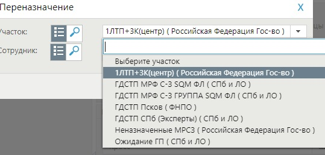

Галеев А.В.
Новая инструкция
Добрый день Коллеги. С текущего момента изменяется алгоритм работы с определенными заявками. Вы работаете по инструкции игнорируя ТК в блоках видишь проблему передаешь экспертам. То есть исправляете сами по новым инструкциям.
Новая инструкция
Добрый день Коллеги. С текущего момента изменяется алгоритм работы с определенными заявками. Вы работаете по инструкции игнорируя ТК в блоках видишь проблему передаешь экспертам. То есть исправляете сами по новым инструкциям.
Инструкции доступны в ЕБЗ юга. Учетка одна на всех. Так же обращаю внимание что если Вам супервизор озвучивает инфу которая по Вашему мнению идет в разрез с ТК, Вы руководствуетесь той информацией что получили от супервизора.
Инструкции используйте в работе!
Краткий перечень: Проброс портов. Настройка. Проверка доступности порта, Отсутствие сессии по технологии PON(ONT в режиме routing), ЦФТВ учётная запись в смартюбе в статусе DELETED (каналы при этом активные), ЦФТВ учетная запись в смартюбе в статусе BLOCKED (каналы при этом активные), ЦФТВ удалены логин пароль в карточке смарттюба, Фиксированный IP подключен в BIS, но не назначается (все технологии), Ошибка статуса канала, Диагностика при обращениях по проблеме отсутствия доступа к конкретному ресурсу.
Если будут возникать вопросы пишите в личку на почту.
Данные для входа: tech / level222
Даниленко А.С.
Ресурс для измерения скорости от РТК
Информируем, что с сегодняшнего дня мы начинаем работать со своим ресурсом измерения скорости
Ресурс для измерения скорости от РТК
Информируем, что с сегодняшнего дня мы начинаем работать со своим ресурсом измерения скорости https://speedtest.rt.ru На ЕБЗ разработан�� форма обратной связи.
Прошу до 12.09.2022 вносить все необходимые сведения согласно шаблона.
Ссылка: Проект SPEEDTEST.RT.RU
Даниленко А.С.
Отображение сессий СИПАЛ
В случае, если СИПАЛ не отображает состояние сессии
Отображение сессий СИПАЛ
В случае, если СИПАЛ не отображает состояние сессии, пишет «???» - обязательно проверяем в НОКе и Axiros!
Галеев А.В.
Звонок без заявки и работа с клиентом
Добрый день. В случае поступления фродового звонка (звонок от 1ЛТП есть с абонентом, но заявки нет).
Звонок без заявки и работа с клиентом
Добрый день.
В случае поступления фродового звонка (звонок от 1ЛТП есть с абонентом, но заявки нет). Вы так же делаете всю диагностику, как бы делали при наличии заявки. То есть проверяете схему, сессию и т.д
Особенно для заявок с ЦФТВ во избежании путанницы уточняете у клиента MAC адрес STB которая не работает. То есть сверяете его с MAC на УЗ клиента в SPD. Так же заходите в web-подключения для того чтобы удостовериться использует ли клиент OTT устройства для просмотра.
Работа обязательно с Сипалом (летит ли MAC и какой), проверка что авторизовано в SmartTube, использует ли клиент ОТТ STB Wink+ (вкладки подключения и web-подключение), проверка в SmartSpy (выбрав нужный временной интервал), проверка в New Cache и проверка с клиентом в интерфейсе самой STB.
Когда Вы помогли клиенту и услуга заработала, Вы не создаете КИ, просто оказываете тех поддержку клиенту, КИ создается только в случае когда необходимо передать на выезд, либо же требуется проверка смежных подразделений, то есть будут дальнейшие действия по проблеме клиента и она не решена. Касается традиционного Цифрового ТВ Винк/СИП/Инет-а/ОХРАНА ПОН СЕКУР. Клиенты должны получать сервис, а не летать между двумя ТП Wink и Wink+.
Пример клиента у которого не работают обе СТБ, Традиционное и СТБ Wink+ (клиента ошибочно переводили на ТП ВИНК+, а у него было нарушена схема подключения обычной стб)
Галеев А.В.
Маршрутизация заявок
Коллеги напоминаю что Вы используете только те маршруты которые есть в тех картах. Самовольное использование левых участков является критической ошибкой!
Звонок без заявки и работа с клиентом
Добрый день.
Коллеги напоминаю что Вы используете только те маршруты которые есть в тех картах. Самовольное использование левых участков является критической ошибкой!
Пример куда нельзя маршрутизировать:
ADSL
ADSL VPI \ VCI. Допустимые параметры линии.
ADSL
| Область | VPI | VCI |
|---|---|---|
| Архангельск | 8 | 35 |
| Вологда | 8 | 35 |
| Новгород | 8 | 35 |
| Калининград | 8 | 35 |
| Карелия | 0 | 55 |
| Коми | 0 | 35 |
| Псков | 0 | 35 |
| Мурманск | 0 | 35 |
| СПБ и ЛО | 0 | 35 |
| IPTV | 0 | 37 |
Если у клиента только ИНТЕРНЕТ, то рекомендуемое значение SNR должно быть не ниже 8Дб (Down/UP)
Если у клиента присутствуют услуги ИНТЕРНЕТ+IPTV, то рекомендуемое значение SNR должно быть не ниже 10Дб (Down/UP)
| Затухание сигнала (Line Attenuation): | |
|---|---|
| до 20 dB | отличная линия |
| от 20 dB до 45 dB | рабочая линия |
| от 45 до 55 dB | периодически пропадает синхронизация |
| от 55 dB и выше | работа оборудования невозможна |
| Отношение сигнал/шум (Signal-to-Noise Ratio (SNR)): | |
|---|---|
| от 10 dB и выше | отличная линия |
| от 8 dB до 10 dB | рабочая линия |
| ниже 8 dB | плохая линия (возможны сбои) |
Привязка к ГП
Корректная привязка инцидента в Аргусе
Привязка к ГП
| ГП МедК | КДГ. ожидание закрытия нарядов |
|---|---|
| ГП ОптК | |
| ГП Станц |
| ГП СПД | ГДСТП. ожидание закрытия нарядов |
|---|---|
| АВР_Соло |
Контакты
Почта, ОСК, VDN, смежные отделы
Контакты
Почта 2ЛТП
sz.dr.2LTP@nw.rt.ru
Номера ОСК:
| Регион | VDN |
|---|---|
| Архангельск | 78739 |
| Вологда | 78732 |
| Калининград | 78735 |
| Карелия | 78738 |
| Коми | 78736 |
| Мурманск | 78733 |
| Новгород | 78737 |
| Псков | 78734 |
| СПБ | 78745 |
| ЛО | 78746 |
Номера смежных отделов:
| Отдел | Номер |
|---|---|
| Тех. Поддержка Wink | 8-800-510-51-08 |
| Конвергент (мобильная связь) | 8-800-181-18-88 |
| МТТ | 8-800-333-53-58 |
| ПКП | 8-800-555-66-02 |
| Для монтеров | 8-800-301-02-12 |
VDN смежных отделов:
| Отдел | VDN |
|---|---|
| Тех. Поддержка Wink | 79035 |
| Тех. Поддержка Умный дом | 78114 |
| Информирование Умный дом | 78333 |
| Для монтеров | 78250 |
Заблокированные порты
Список заблокированных TCP \ UDP портов
Заблокированные порты
Порты UDP:
Порты TCP:
Если у клиента dynamic ip, то будут заблокированы следующие destination tcp ports:
При обращении клиентов на недоступность 80 порта, проверяете что клиент получает публичный динамический IP и для восстановления доступности 80 порта рекомендуете подключить фиксированный IP.
Сброс сети
Команды для сброса сети ОС Windows
Сброс сети
| Команда | Пояснение |
|---|---|
| netsh winsock reset | - cброc каталогa Winsock. |
| netsh int ip reset | - cброс протокола IP. |
| ipconfig /flushdns | - cброс DNS. |
Команды AVAYA
Команды для ручной смены статуса оператора
Команды AVAYA
| Команда | Статус |
|---|---|
| *50 логин пароль | - Вход в систему |
| *51 | - Прием входящих звонков |
| #50 | - Выход из системы |
| #510 | - Default |
| #511 | - Перерыв |
| #512 | - Обед |
| #513 | - Исходящий вызов |
| #514 | - Вызов к руководству |
| #515 | - Вызов в контроль качества |
| #516 | - Инструктаж |
| #517 | - Снятие отчетов |
Cигнал DOCSIS
Нормальные параметры линии для DOCSIS
Cигнал DOCSIS
| Параметр | Условие | Норма |
|---|---|---|
| DSSNR | - | более 32 дБ |
| DSPI | Для motorola | от 0 дБ*мВ до 9дБ*мВ |
| DSPI | Для остальных модемов | от -5дБ*мВ до 15дБ*мВ |
| USTxPL | - | от 35 дБ*мВ до 55 дБ*мВ |
| USRxPL | отклонение от среднего по дому | более +/- 1дБмВ |
| USSNR | 16 QAM | более 22 дБ |
| USSNR | 32 QAM | более 25 дБ |
| USSNR | 64 QAM | более 28 дБ |
Статусы NOC и Radius
Расшифровка статусов каналов и сессий
Статусы NOC и Radius
Статусы NOC
| Статус | Пояснение |
|---|---|
| bill-suspend | Временно отключен к примеру по заявлению от клиента |
| active | Канал активен, доступ к сервису есть |
| blocked | Заблокирован |
| archived | Архивирован |
| bill-block | Отключен за неуплату |
| wait-cross | Ожидание выполнения кроссировочных работ |
| cust-install | Инсталляция у клиента |
Статусы Radius
| Статус | Пояснение |
|---|---|
| User Request | Прекращение сеанса по инициативе пользователя (например, с помощью LCP Terminate или выхода из сети – log out) |
| Lost Carrier | На порту был сброшен сигнал DCD (детектирование несущей) |
| Session Timeout | Достигнута максимальная продолжительность сеанса |
| Admin Reset | Сессия или порт сброшены администратором |
| NAS Request | Сервер NAS завершил сессию по неизвестной причине |
Параметры PON
Параметры сигнала, причины потери сигнала
Параметры PON
Параметры сигнала
По уровню оптического сигнала на приемной стороне ONT норма на приеме от -12 dBm до -27 dBm .
Потери сигнала на ONT
| Причина | Пояснение |
|---|---|
| Working | Синхронизация есть |
| Reset ONT | Перезапуск ОНТ через СУ или telnet |
| Is dying-gasp | Потеря питания на ОНТ |
| LOFI | Ошибки в канале при передаче |
| bill-block | Отключен за неуплату |
| LOSI | Потери сигнала на ONT |